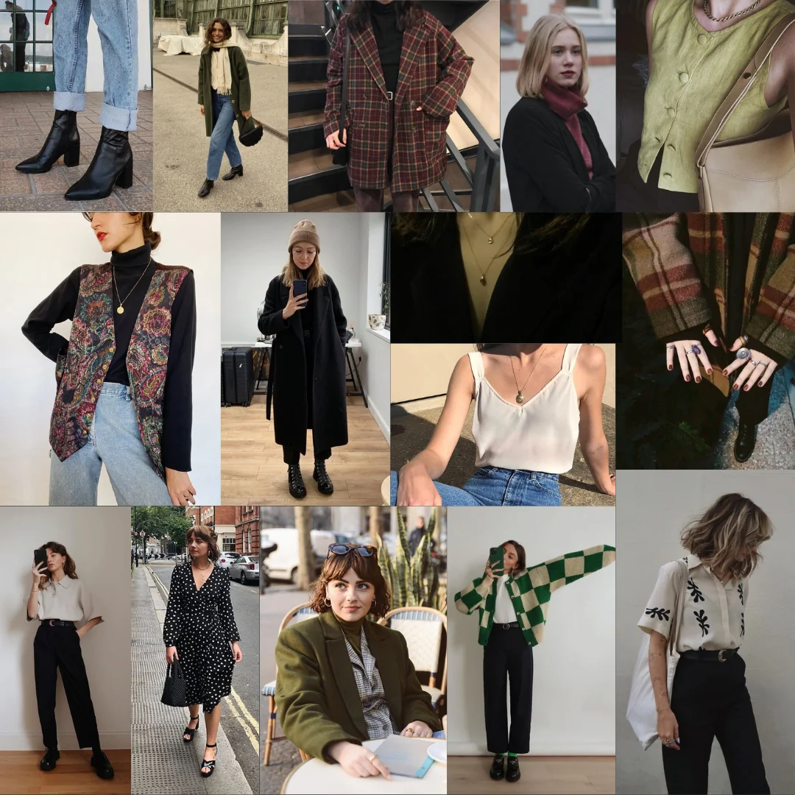
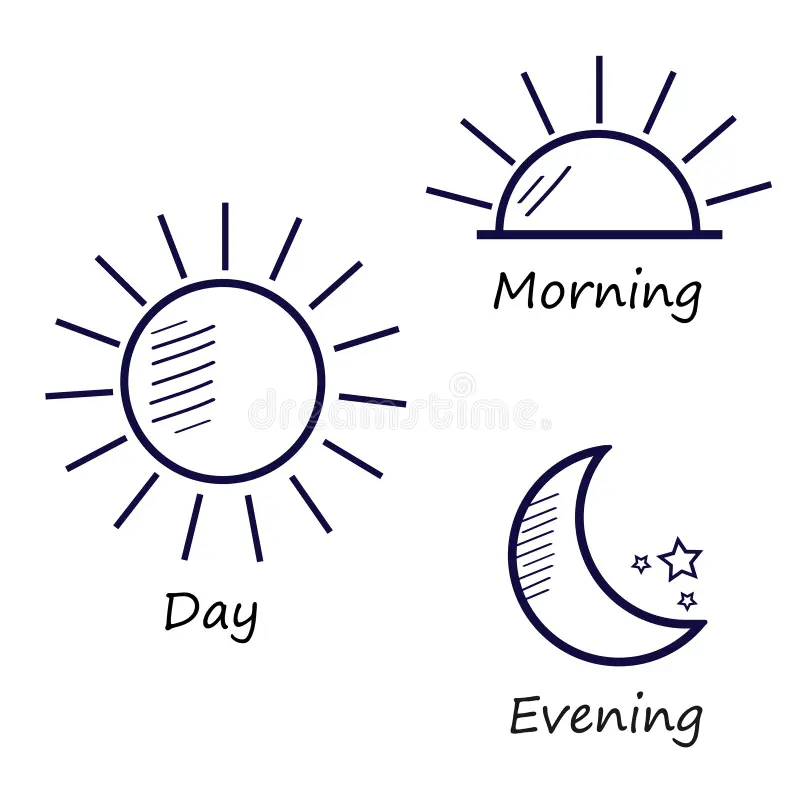
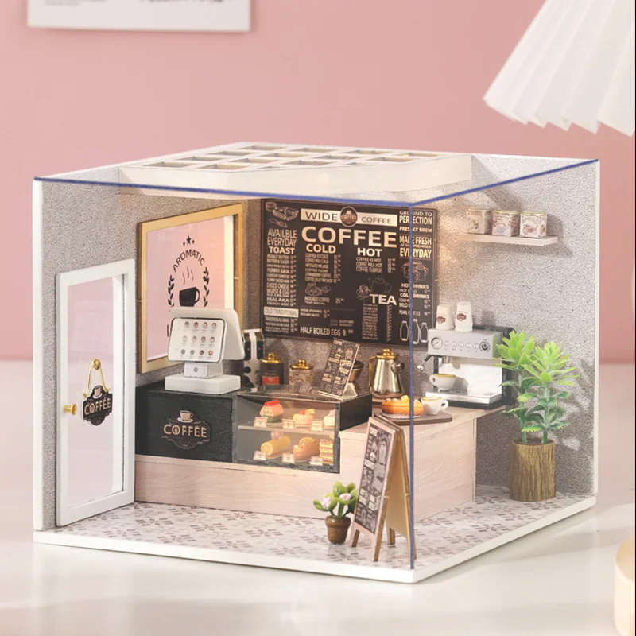

Projects
A gallery of what I've been working on.

What style is in this season
A JavaScript-powered seasonal shopping page for fictional outfitter Eddie Browser. Clicking each season dynamically updates the color scheme, logo, clothing item, and promotional text to match spring, summer, fall, and winter.

Dynamic Time of Day Page
A JavaScript-powered web page that reads the client's system clock and dynamically changes the background color, image, and message based on the time of day — morning, afternoon, evening, and night.

My little coffee shop
A single-page JavaScript app that rotates unique images, descriptions, and color schemes for each day of the week using the Date object and URL query parameters — allowing users to also click links to preview any day's content directly.